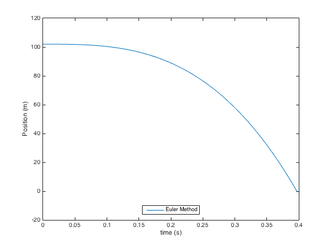

clear all;
V0 = 0;
m = 0.003;
g = 9.81;
rho = 1.2;
Amax = 0.06237;
Amin = 1e-4;
cw = 0.4;
N = 200;
V = zeros(1,N);
V(1)=V0;
deltat=0.002;
pos(1) = 102;
t=(0:N-1)*deltat;
Arand = Amin+Amax*rand(1,1)
if( Arand < Amax && Arand > Amax/2)
Arand = Amax;
else
Arand = Amin;
end
Arand = Amin;
k = 0.5*cw*rho*Arand;
for i=1:N-1
V(i+1)=V(i)- deltat*(g-(k/m)*V(i)^2);
pos(i+1) = pos(i) + V(i)*t(i+1);
end
plot(t,pos);
xlabel('time (s)');
ylabel('Position (m)');
legend ('Euler Method','location','south');
Arand =
0.0598
